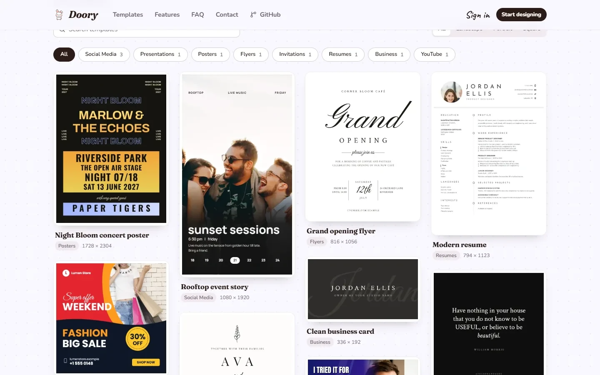
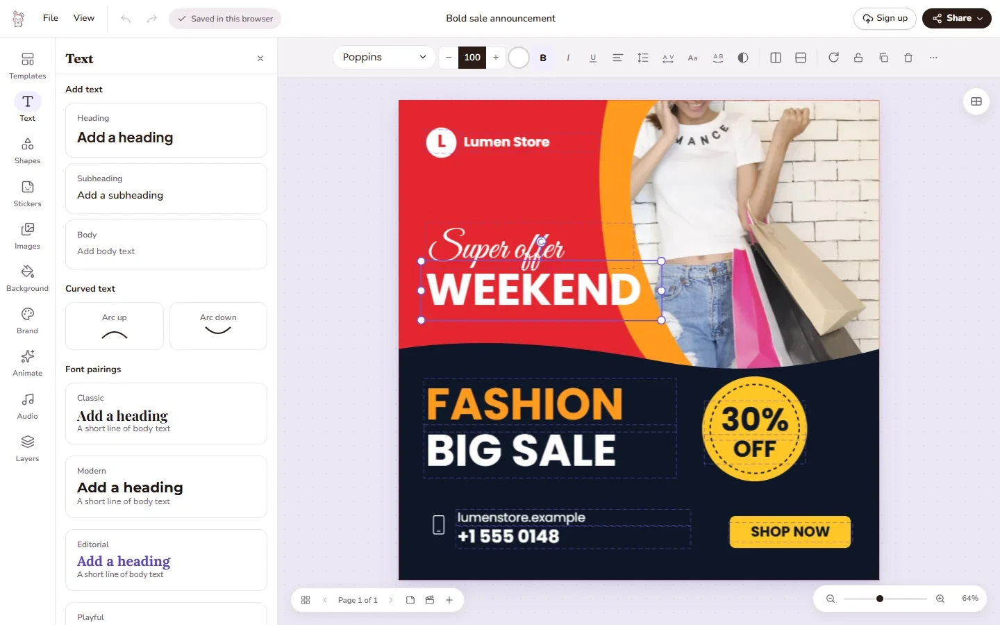
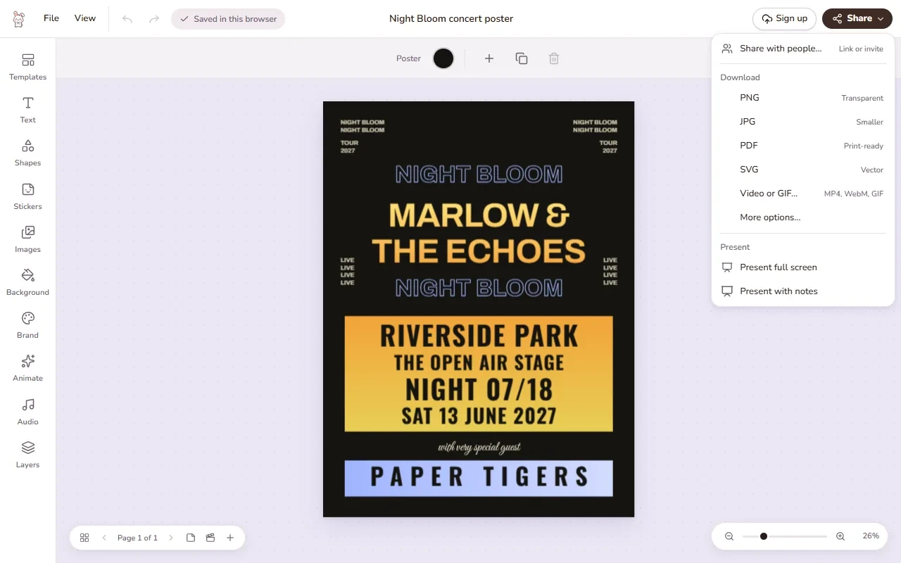

免登录做张图，
分享前先看账号边界
Doory 可以先以访客身份编辑、下载作品；访客稿件只保存在当前设备的浏览器里，云端保存、分享和品牌套件需要账号。
依据固定版本官方资料整理；未登录产品、未逐项实测、未部署。截图均来自项目官方。
速览：先用官网，不急着搭服务器
如果只是做一张临时配图，建议打开 Doory 官网，选模板、改字和图片、下载一份文件。需要跨设备保存或发分享链接时，再决定是否注册账号。
如果依赖大量成品模板、企业治理或已验证的稳定性，先评估再迁移；官方资料并不足以证明这些需求已经满足。
这里的“建议”是适用性判断，不是使用体验或性能结论。
01 / 从哪里开始
从 10 个起始模板里，挑一个接近的用途
1 打开官网，以访客身份开始
访问 doory.art。官方 FAQ 说明无需账号即可设计；作品及其图片保存在该设备浏览器中。不要把本机保存当成跨设备同步，也不要在清理浏览器数据前依赖它作为唯一副本。
2 选模板，或从空白页开始
README 列出的 10 个起始模板分别覆盖：巡演海报、活动限时动态、促销帖子、路演演示、开业传单、婚礼邀请、YouTube 缩略图、简历、金句帖子、名片。它们是可编辑的起点，不是大型模板库；自托管管理员可以另行添加模板。

02 / 怎么改图
改文字、换图片，再整理图层
3 从左侧面板取工具，选中对象再调整
官方说明中，工具位于左侧栏，点击后展开面板；画布上方工具栏会随选中对象变化。可以先替换标题与正文，再上传自己的图片，调整裁切、蒙版和滤镜。文字工具还包括曲线文字、文字效果与字体搭配。
对象叠在一起时，用图层重命名、锁定、隐藏、分组和排序；右键菜单可复制、创建副本及调整排列。这些是官方文档描述的操作路径，并非本次点击实测。

素材和抠图要分开看。上传自己的图片与搜索图库不是一回事：Unsplash / Pexels 图库搜索需要相应 key。README 描述了浏览器内运行的背景移除；Compose 另有可选 AI 抠图服务，需启用 ai profile 并配置 AI_SERVER_API_KEY，不能据此说基础编辑必须接 AI 后端。
来源：编辑与素材能力 · 可选 AI 服务配置
03 / 怎么拿走作品
Share 菜单里有下载；分享链接另有账号门槛
4 按用途选导出格式
官方将分享链接、下载和演示放在同一个 Share 菜单。README 声明支持 PNG、JPG、SVG、PDF、MP4、WebM、GIF，下载在浏览器内生成；印刷 PDF 可带出血和裁切标记。可先按静态配图、印刷或动态展示的用途选格式，再检查实际输出。
下载不等于分享。账号用于云端设计、分享与品牌套件，注册可迁移访客稿件。项目另列出查看／评论／编辑权限链接、密码、版本历史与实时共编，但不能把这些写成“免登录多人协作”。

数字是官方声明，不是独立统计
README 列出约 27,500 个图标、27 种进入／退出动画、12 种强调动画、16 种页面转场。这里保留来源归因，没有重新计数，也未验证动画、音频或各格式导出的效果、兼容性和稳定性。
04 / 使用前的边界
许可是 Attribution Assurance License，不是 MIT
许可允许使用、修改和再分发，包括商业用途，但附带署名义务。GitHub 元数据中的 Other / NOASSERTION 只是分类结果，不等于项目没有许可证。
- 分发源码：须显著保留可验证的 GPG 签名许可文本。
- 二进制与运行中的应用：二进制分发须附许可文本，启动程序时显著展示作者姓名 Siam、身份及项目 URL；README 也明确要求在运行中的应用显著署名。
- 其他材料：按 README 保留 LICENSE 与 NOTICE，第三方软件、字体和内容仍受各自许可约束；未经书面许可，不可借作者名称或商标为衍生产品背书。
官方要求的署名为：“Doory by Siam, creator and maintainer of Doory, https://github.com/shaongitbd/doory”。涉及再分发或商业交付时，请直接阅读 完整 LICENSE、NOTICE 和 第三方许可说明。本段是阅读提示，不代替许可原文。
05 / 可选项，不是上手前提
自托管需要数据库、密钥和运维准备
只有希望自己控制服务器上的设计和上传文件时，才需要考虑自托管。官方 Docker 安装文档要求 Docker 与 Compose 插件，流程并不止启动一个容器：
- 取得项目并准备环境配置，设置 DJANGO_SECRET_KEY、POSTGRES_PASSWORD；对外访问时配置 SITE_URL 与允许的主机名。
- 按官方文档构建／启动服务。默认包含 PostgreSQL、API、实时协作服务和 Web；新站不会自动生成管理员。
- 创建管理员账号，再按 起始内容文档导入模板、字体、图标和音频；新站初始为空。
- 上线前配置 HTTPS 反向代理、安全重定向和安全 Cookie，并确保 /ws/ 的 WebSocket 转发。安排数据库和上传文件备份，参照 备份文档制定恢复方案。
MCP 默认关闭。需要 AI 助手接入时，再阅读 官方 MCP 文档并单独评估开放范围。本卡仅介绍部署前提，没有执行部署、启用服务或验证恢复流程。
来源与核验范围
- 发现线索：GitHub Daily 原帖；功能与许可判断以一手项目资料为准。
- 官网：doory.art（地址来自仓库元数据）；项目：shaongitbd/doory。
- 固定版本：2eb2557c1eed3aa256a78f1874abfb5a1315849c。主要证据为该版本 README、LICENSE、Docker 文档与 Compose 配置。
Doory by Siam, creator and maintainer of Doory, https://github.com/shaongitbd/doory。三幅图片均为项目官方截图，仅作界面说明，不是本次实测记录。未验证线上可用性、逐格式导出、多人协作、性能或生产稳定性；链接到的扩展配置文档请在实施前另行核对。